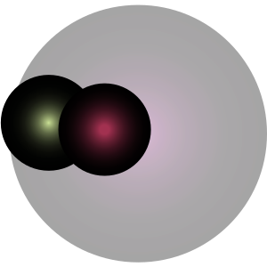
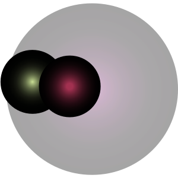
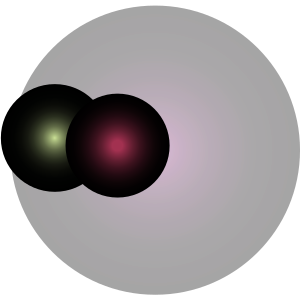

c
k
Hello,
this site uses a SVG fitler on the entire page, which may cause stuttering or even crash your browser due to inadequate machine performance.
Chrome or Edge on highest resolution recommended
This is a self-help document based on the astrology of art, aka artrology, whose 11 signs appear in 11 single snippets of barcodes. The guide predicts and advises on the artistic affairs in the near future.
The basis of artrology lies on the cusp of the observational study of art events, arbitrary wishes, wishful seriousness, in-experiencial movements, personalized lack of assurance, and relative positions among roles, words, and practices.
If you wonder how to present yourself / your practice or some general career advice, proceed with names or times.
THIS IS PLACEHOLDER FOR OTHER TEXT LATER THIS IS PLACEHOLDER FOR OTHER TEXT LATER THIS IS PLACEHOLDER FOR OTHER
TEXT LATER THIS IS PLACEHOLDER FOR OTHER TEXT LATER THIS IS PLACEHOLDER FOR OTHER TEXT LATER THIS IS PLACEHOLDER FOR OTHER TEXT LATER THIS IS
PLACEHOLDER FOR OTHER TEXT LATER THIS IS PLACEHOLDER FOR OTHER TEXT LATER
enter the number of strokes of a name:
THIS IS PLACEHOLDER FOR OTHER TEXT LATER THIS IS PLACEHOLDER FOR OTHER TEXT LATER THIS IS PLACEHOLDER
FOR OTHER TEXT LATER THIS IS PLACEHOLDER FOR OTHER TEXT LATER THIS IS PLACEHOLDER FOR OTHER TEXT LATER THIS IS PLACEHOLDER FOR OTHER
TEXT LATER THIS IS PLACEHOLDER FOR OTHER TEXT LATER THIS IS PLACEHOLDER FOR OTHER TEXT LATER
choose a time; clicking and holding on the lighter circle goes backward in time, and the darker one goes forward.
